| 1. |
Warszawa |
|
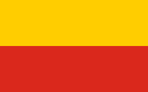 |
mazowieckie |
- 2021 r. – 1.794.166
- 2007 r. – 1.706.624
- 1999 r. – 1.618.468
|
5,13% |
5,45% |
3469 os./km² |
517,24 km² |
| 2. |
Kraków |
|
|
małopolskie |
- 2021 r. – 779.966
- 2007 r. – 766.583
- 1999 r. – 740.666
|
1,75% |
3,50% |
2386,3 os./km² |
326,85 km² |
| 3. |
Łódź |
|
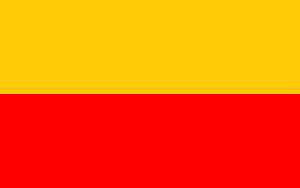 |
łódzkie |
- 2021 r. – 672.185
- 2007 r. – 753.192
- 1999 r. – 806.728
|
-10,76% |
-6,64% |
2278 os./km² |
293,25 km² |
| 4. |
Wrocław |
|
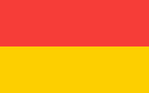 |
dolnośląskie |
- 2021 r. – 641.928
- 2007 r. – 632.930
- 1999 r. – 643.877
|
1,42% |
-1,70% |
2192,23 os./km² |
292,82 km² |
| 5. |
Poznań |
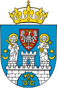 |
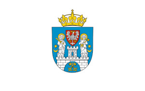 |
wielkopolskie |
- 2021 r. – 532.048
- 2007 r. – 567.932
- 1999 r. – 578.235
|
-6,32% |
-1,78% |
2031,4 os./km² |
261,91 km² |
| 6. |
Gdańsk |
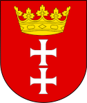 |
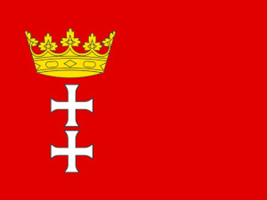 |
pomorskie |
- 2021 r. – 470.805
- 2007 r. – 458.717
- 1999 r. – 458.988
|
2,64% |
-0,01% |
1787,1 os./km² |
263,44 km² |
| 7. |
Szczecin |
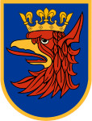 |
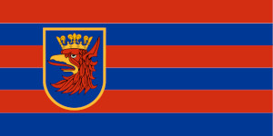 |
zachodniopomorskie |
- 2021 r. – 398.255
- 2007 r. – 410.811
- 1999 r. – 416.988
|
-3,06% |
-1,48% |
1319,2 ok./km² |
300,55 km² |
| 8. |
Bydgoszcz |
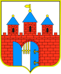 |
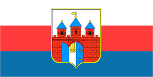 |
kujawsko-pomorskie |
- 2021 r. – 344.091
- 2007 r. – 361.222
- 1999 r. – 386.855
|
-4,74% |
-6,63% |
1955,3 os./km² |
175,98 km² |
| 9. |
Lublin |
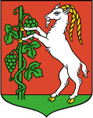 |
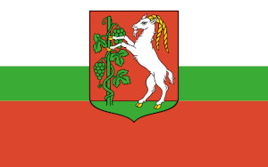 |
lubelskie |
- 2021 r. – 338.586
- 2007 r. – 351.806
- 1999 r. – 356.251
|
-3,76% |
-1,24% |
2296,3 os./km² |
147,45 km² |
| 10. |
Białystok |
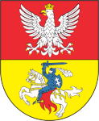
|
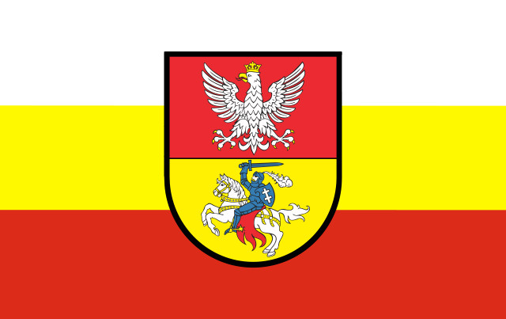 |
podlaskie |
- 2021 r. – 296.958
- 2007 r. – 294.143
- 1999 r. – 285.000
|
0,96% |
3,21% |
2902,2 os./km² |
102,13 km² |
| 11. |
Katowice |
|
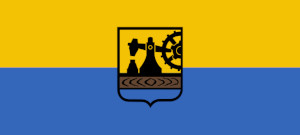 |
śląskie |
- 2021 r. – 290.553
- 2007 r. – 317.220
- 1999 r. – 345.934
|
-8,41% |
-8,30% |
1764,7 os./km² |
164,64 km² |
| 12. |
Gdynia |
|
|
pomorskie |
- 2021 r. – 244.969
- 2007 r. – 250.242
- 1999 r. – 253.521
|
-2,11% |
-1,29% |
1806,3 os./km² |
135,14 km² |
| 13. |
Częstochowa |
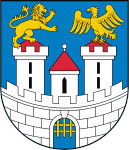 |
|
śląskie |
- 2021 r. – 217.530
- 2007 r. – 242.300
- 1999 r. – 257.812
|
-10,22% |
-6,02% |
1362 os./km² |
159,71 km² |
| 14. |
Radom |
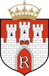 |
|
mazowieckie |
- 2021 r. – 209.296
- 2007 r. – 224.857
- 1999 r. – 232.262
|
-6,92% |
-3,19% |
1872,1 os./km² |
111,8 km² |
| 15. |
Toruń |
|
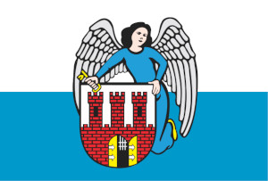 |
kujawsko-pomorskie |
- 2021 r. – 198.613
- 2007 r. – 206.619
- 1999 r. – 211.955
|
-3,87% |
-2,52% |
1709,4 os./km² |
115,72 km² |
| 16. |
Rzeszów |
|
|
podkarpackie |
- 2021 r. – 197.863
- 2007 r. – 166.454
- 1999 r. – 162.049
|
18,87% |
2,74% |
1538 os./km² |
129,01 km² |
| 17. |
Sosnowiec |
|
|
śląskie |
- 2021 r. – 197.586
- 2007 r. – 222.586
- 1999 r. – 244.102
|
-11,23% |
-8,81% |
2169,8 os./km² |
91,06 km² |
| 18. |
Kielce |
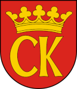 |
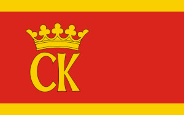 |
świętokrzyskie |
- 2021 r. – 193.415
- 2007 r. – 205.902
- 1999 r. – 212.383
|
-6,06% |
-3,05% |
1763,9 os./km² |
109,65 km² |
| 19. |
Gliwice |
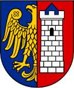 |
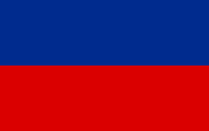 |
śląskie |
- 2021 r. – 177.049
- 2007 r. – 197.393
- 1999 r. – 212.164
|
-10,31% |
-6,96% |
1322,4 os./km² |
133,88 km² |
| 20. |
Olsztyn |
|
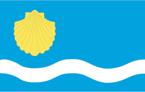 |
warmińsko-mazurskie |
- 2021 r. – 171.249
- 2007 r. – 175.710
- 1999 r. – 171.131
|
-2,54% |
2,67% |
1938,7 os./km² |
88,33 km² |
| 21. |
Zabrze |
|
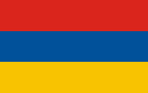 |
śląskie |
- 2021 r. – 170.924
- 2007 r. – 189.062
- 1999 r. – 200.177
|
-9,59% |
-5,55% |
2125,9 os./km² |
80,4 km² |
| 22. |
Bielsko-Biała |
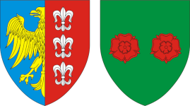 |
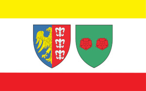 |
- 2021 r. – 169.756
- 2007 r. – 175.690
- 1999 r. – 178.963
|
-3,38% |
-1,83% |
1363 os./km² |
124,51 km² |
| 23. |
Bytom |
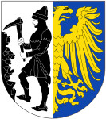 |
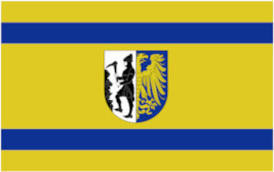 |
- 2021 r. – 163.255
- 2007 r. – 184.765
- 1999 r. – 205.560
|
-11,64% |
-10,12% |
2350 os./km² |
69,44 km² |
| 24. |
Zielona Góra |
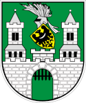 |
|
lubuskie |
- 2021 r. – 140.892
- 2007 r. – 117.523
- 1999 r. – 118.182
|
19,88% |
-0,56% |
506,2 os./km² |
278,32 km² |
| 25. |
Rybnik |
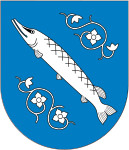 |
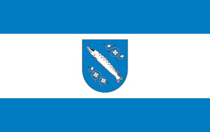 |
śląskie |
- 2021 r. – 137.128
- 2007 r. – 141.080
- 1999 r. – 144.582
|
-2,80% |
-2,42% |
924,3 os./km² |
148,36 km² |
| 26. |
Ruda Śląska |
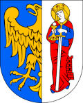 |
 |
- 2021 r. – 136.423
- 2007 r. – 144.584
- 1999 r. – 159.665
|
-5,64% |
-9,45% |
1755,1 os./km² |
77,73 km² |
| 27. |
Opole |
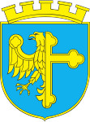 |
|
opolskie |
- 2021 r. – 127.839
- 2007 r. – 126.748
- 1999 r. – 129.553
|
0,86% |
-2,17% |
858 os./km² |
148,99 km² |
| 28. |
Tychy |
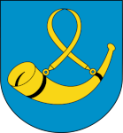 |
|
śląskie |
- 2021 r. – 126.871
- 2007 r. – 129.776
- 1999 r. – 133.178
|
-2,24% |
-2,55% |
1550,8 os./km² |
81,81 km² |
| 29. |
Gorzów Wielkopolski |
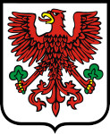 |
|
lubuskie |
- 2021 r. – 122.589
- 2007 r. – 125.411
- 1999 r. – 126.019
|
-2,25% |
-0,48% |
1430,1 os./km² |
85,72 km² |
| 30. |
Elbląg |
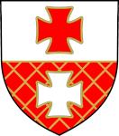 |
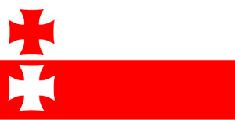 |
warmińsko-mazurskie |
- 2021 r. – 118.582
- 2007 r. – 126.710
- 1999 r. – 129.782
|
-6,41% |
-2,37% |
1477,7 os./km² |
79,82 km² |
| 31. |
Dąbrowa Górnicza |
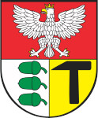 |
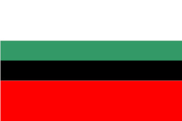 |
śląskie |
- 2021 r. – 118.285
- 2007 r. – 128.795
- 1999 r. – 131.037
|
-8,16% |
-1,71% |
626,7 os./km² |
188,73 km² |
| 32. |
Płock |
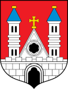 |
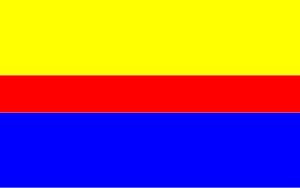 |
mazowieckie |
- 2021 r. – 118.268
- 2007 r. – 126.968
- 1999 r. – 131.011
|
-6,85% |
-3,09% |
1343,3 os./km² |
88,04 km² |